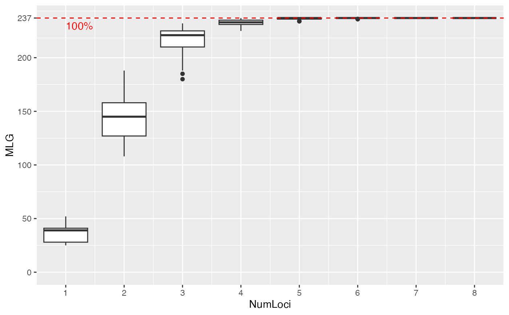

Genotype accumulation curves are useful for determining the minimum number of loci necessary to discriminate between individuals in a population. This function will randomly sample loci without replacement and count the number of multilocus genotypes observed.
Usage
genotype_curve(
gen,
sample = 100,
maxloci = 0L,
quiet = FALSE,
thresh = 1,
plot = TRUE,
drop = TRUE,
dropna = TRUE
)Arguments
- gen
- sample
an
integerdefining the number of times loci will be resampled without replacement.- maxloci
the maximum number of loci to sample. By default,
maxloci = 0, which indicates that n - 1 loci are to be used. Note that this will always take min(n - 1, maxloci)- quiet
if
FALSE(default), Progress of the iterations will be displayed. IfTRUE, nothing is printed to screen as the function runs.- thresh
a number from 0 to 1. This will draw a line at that fraction of multilocus genotypes, rounded. Defaults to 1, which will draw a line at the maximum number of observable genotypes.
- plot
if
TRUE(default), the genotype curve will be plotted via ggplot2. IfFALSE, the resulting matrix will be visibly returned.- drop
if
TRUE(default), monomorphic loci will be removed before analysis as these loci affect the shape of the curve.- dropna
if
TRUE(default) anddrop = TRUE, NAs will be ignored when determining if a locus is monomorphic. WhenFALSE, presence of NAs will result in the locus being retained. This argument has no effect whendrop = FALSE
Value
(invisibly by deafuls) a matrix of integers showing the results of each randomization. Columns represent the number of loci sampled and rows represent an independent sample.
Details
Internally, this function works by converting the data into a
loci object, which represents genotypes as a data
frame of factors. Random samples are taken of 1 to n-1 columns of the
matrix and the number of unique rows are counted to determine the number of
multilocus genotypes in that random sample. This function does not take
into account any definitions of MLGs via mlg.filter or
mll.custom.
Examples
data(nancycats)
nan_geno <- genotype_curve(nancycats)

# \dontrun{
# Marker Type Comparison --------------------------------------------------
# With AFLP data, it is often necessary to include more markers for resolution
data(Aeut)
Ageno <- genotype_curve(Aeut)
# Many microsatellite data sets have hypervariable markers
data(microbov)
mgeno <- geotype_curve(microbov)
#> Error in geotype_curve(microbov): could not find function "geotype_curve"
# Adding a trendline ------------------------------------------------------
# Trendlines: you can add a smoothed trendline with geom_smooth()
library("ggplot2")
p <- last_plot()
p + geom_smooth()
#> `geom_smooth()` using method = 'gam' and formula = 'y ~ s(x, bs = "cs")'
# Producing Figures for Publication ---------------------------------------
# This data set has been pre filtered
data(monpop)
mongeno <- genotype_curve(monpop)
 # Here, we add a curve and a title for publication
p <- last_plot()
mytitle <- expression(paste("Genotype Accumulation Curve for ",
italic("M. fructicola")))
p + geom_smooth() +
theme_bw() +
theme(text = element_text(size = 12, family = "serif")) +
theme(title = element_text(size = 14)) +
ggtitle(mytitle)
#> `geom_smooth()` using method = 'gam' and formula = 'y ~ s(x, bs = "cs")'
# }
# Here, we add a curve and a title for publication
p <- last_plot()
mytitle <- expression(paste("Genotype Accumulation Curve for ",
italic("M. fructicola")))
p + geom_smooth() +
theme_bw() +
theme(text = element_text(size = 12, family = "serif")) +
theme(title = element_text(size = 14)) +
ggtitle(mytitle)
#> `geom_smooth()` using method = 'gam' and formula = 'y ~ s(x, bs = "cs")'
# }